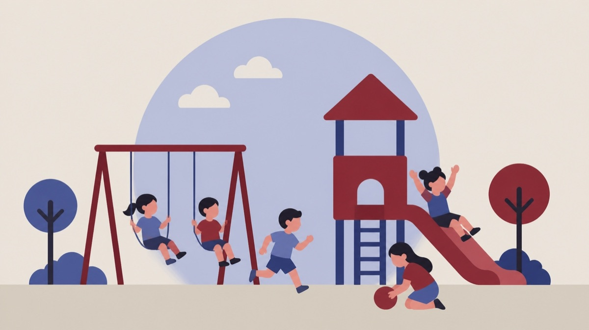

På dagsordenen 2. december, Børne- og Skoleudvalget, Glostrup
Besøg og introduktion til Børne- og Skoleudvalgets områder i 2027

Kort fortalt
- Forslaget
- Model 1 for besøg ved udvalgsmøder godkendes.
- Model 2 for besøgsrunder godkendes og dato herefter aftales.
- Hvem
- Børne- og Skoleudvalget, Glostrup Kommune
- Hvornår
- Onsdag 2. december 2026
- Status
- På dagsordenen. Sagen behandles på mødet.
Er noget forkert her? Skriv til os
Hvad kan du gøre?
- Skriv til politikerne
- Udvalgets møder er lukkede, men du kan skrive til medlemmerne før mødet onsdag 2. december 2026. Du finder dem på glostrup.dk.
Læs hele sagen Kommunens egen tekst
Sagsfremstilling
For at give det nye Børne- og Skoleudvalg en god introduktion til området, så har der i 2026 været gennemført udvalgsmøder på udvalgte matrikler. Derudover har der været arrangeret 2 besøgsrunder på området.
Besøgsrunderne har givet udvalget bedre mulighed for at få et indblik og viden om kommunens forskellige institutioner og tilbud. Udvalget har givet udtryk for gerne at ville gentage besøgsdagene med institutioner, som ikke allerede er blevet besøgt.
Administrationen anbefaler derfor følgende modeller for besøg på området i 2027:
• Udvalgsmøderne i maj, september og december bliver afholdt på hhv. daginstitutionen Ejbyvang (maj), daginstitutionen Rosenåen afd. Violen (september) og daginstitutionen Regnbuen (december). Udvalgsmøderne vil starte med en rundvisning, hvorefter en normal dagsorden vil blive behandlet i et mødelokale på skolen/institutionen. Af hensyn til udvalgsmedlemmernes deltagelse i andre udvalgsmøder startes møderne først kl. 19.15.
Denne model kræver enighed i udvalget.
• Besøgsrunder til området placeres udenfor udvalgsmøderne i form af hele besøgsdage. Besøgsrunden skal ikke betragtes som et udvalgsarrangement med mødepligt, alt deltagelse er frivillig.
Økonomi
Ingen som følge af sagen.
Indstilling
Center for Børn, Unge og Familier indstiller:
• Model 1 for besøg ved udvalgsmøder godkendes.
• Model 2 for besøgsrunder godkendes og dato herefter aftales.
Kilde: Glostrup Kommune, Børne- og Skoleudvalget, dagsorden fra mødet onsdag 2. december 2026, punkt 4. Læs den originale sag hos kommunen.